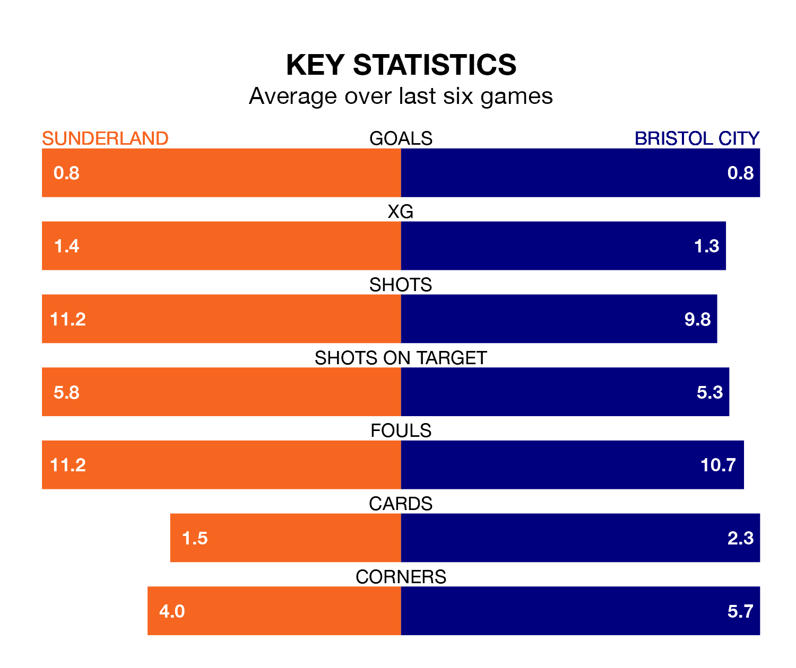

Sunderland are on a poor run ahead of hosting Bristol City at the Stadium of Light on Saturday, with just four points collected from their last six games.
The Black Cats have picked up one win and one draw in their last six EFL Championship games, and face a Robins side whose last six games have brought three wins and three losses.
In Jack Clarke, Sunderland have one of the league's most on-form strikers so far this season. He has notched 15 goals in 34 appearances, to sit fifth in the scoring charts.
His goal rate of one every 198 minutes is quicker than that of Tommy Conway, City's top scorer with a goal every 276 minutes, and a total of seven goals in 33 games.
With 44 goals in 40 games so far this season, the Robins are scoring at below the league average rate with 1.1 goals per game. But they are conceding fewer than average too, letting in 45 goals at a rate of 1.1 per game.
The Black Cats are also below average scorers, with 1.3 goals per game, compared to a league average of 1.4. They have conceded 1.2 goals per game.
In the last three years, Sunderland and City have played each other on three occasions. They won one each, and they drew once.
Their last meeting was on December 16, when City won 1-0 at home.
The hosts are 13th in the table after 40 games, of which they have won 15 and drawn six, earning 51 points.
The away team are one place ahead of Sunderland in 12th, with 15 wins and eight draws putting them on 53 points.
Sunderland's last match was on Monday, a 5-1 loss against Blackburn Rovers, with Christopher Rigg getting the goal for the Black Cats.
City beat Plymouth Argyle 1-0 last time out, also on Monday, with Nahki Wells on the scoresheet.
Saturday's match will be refereed by Leigh Doughty, who has taken charge of 11 EFL Championship games so far this season, issuing one red card and booking 43 players. He has not awarded any penalties.
The last City game Doughty refereed was the 2-2 draw away at Coventry City on January 30. He is yet to oversee a match featuring Sunderland this season.
Updated: 16:41 (UTC), 04/04/24